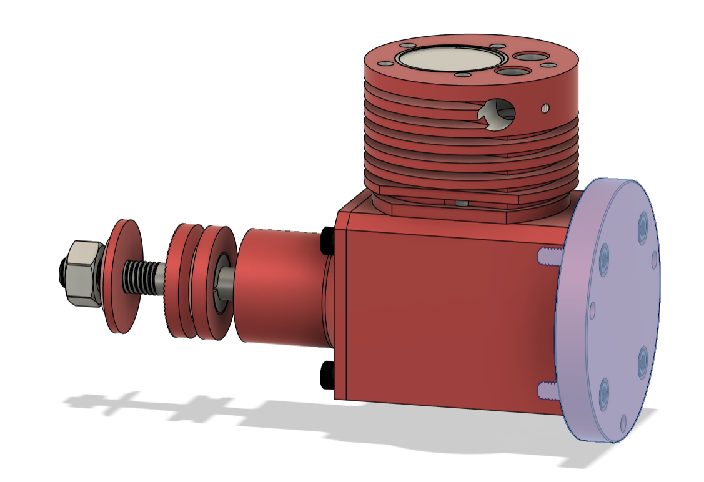
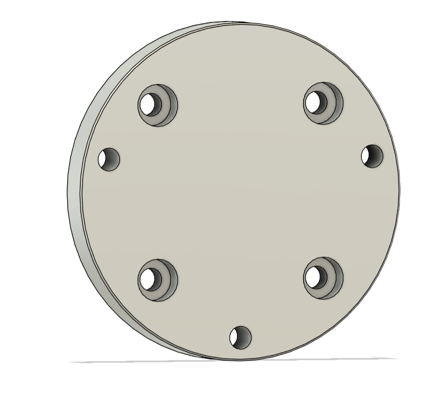
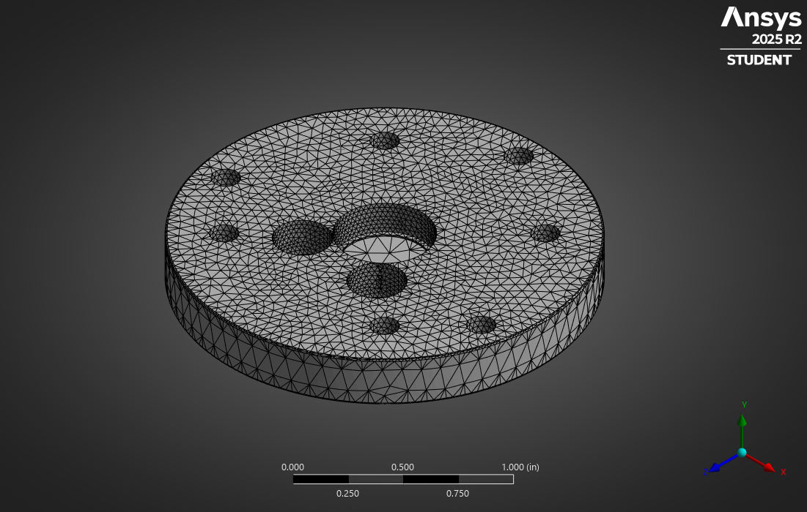
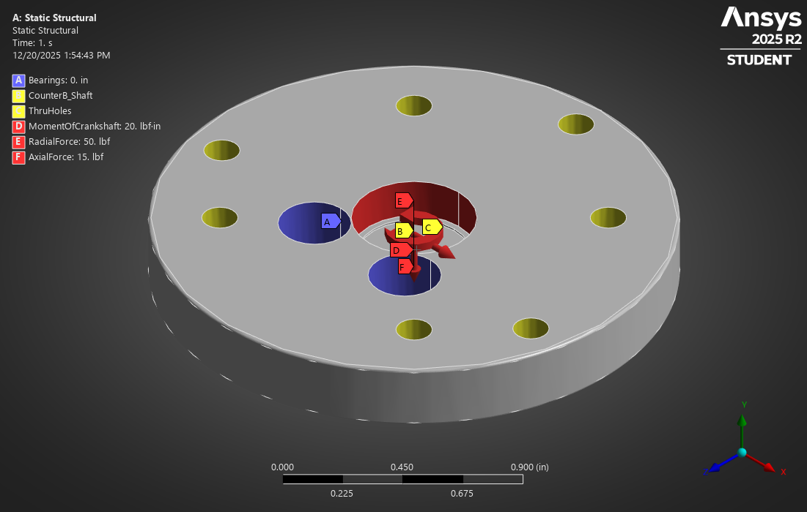
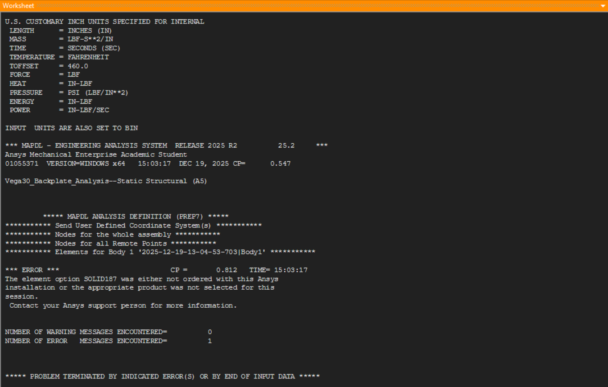
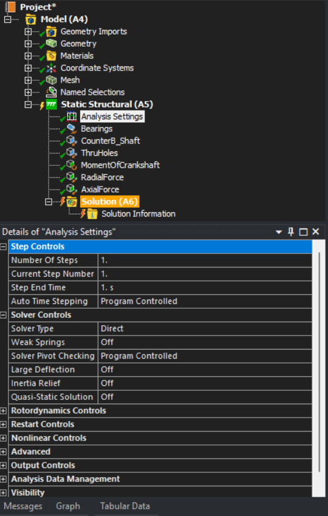

Pre-processing complete; model prepared for solution.
This project focuses on the structural analysis of a small internal combustion engine mounting backplate used in RC aircraft and marine applications. The objective is to evaluate stress distribution, deformation behavior, and load transfer paths under representative operational loading conditions.
CAD Modeling: Fusion 360
Analysis: ANSYS Mechanical
Methods: Finite Element Preprocessing, Meshing, Boundary Condition Development
The goal of this analysis was to create a representative finite element model of the engine backplate capable of predicting structural response to crankshaft loads. Emphasis was placed on developing an accurate yet computationally efficient model through geometry simplification, targeted mesh refinement, and realistic boundary condition definition.
The full engine assembly was first modeled to establish functional context and interface locations. A reduced geometry containing only the backplate was then extracted for finite element analysis to improve solution efficiency while preserving all critical load paths, bearing interfaces, and mounting features.
 Partial engine assembly providing mounting and load context.  Reduced backplate geometry prepared for structural analysis.Mesh refinement was applied selectively to regions of expected stress concentration, including bearing bores, bolt holes, and outer fillet transitions. A finer element size was used locally to capture stress gradients while maintaining a reasonable global element count and solution time.
 Refined mesh highlighting bearing bores, bolt holes, and filleted edges.Boundary conditions were applied to represent the backplate being constrained by mounting fasteners at the crankcase interface. Operational loading was applied at the bearing locations to simulate axial and radial forces transmitted by the crankshaft, as well as applied moments consistent with engine operation.
 Applied constraints, forces, and moments representing engine operating loads.All geometry preparation, material assignment, meshing, and load application steps were completed successfully. However, solution execution was halted due to element type restrictions imposed by the ANSYS Student license.
 ANSYS solver message indicating element type restrictions under the student license.  Solver error encountered during solution stage due to license limitations.Despite this limitation, the completed pre-processing workflow demonstrates appropriate modeling decisions, boundary condition definition, and mesh refinement strategies consistent with industry-standard FEA practice.
This model is fully prepared for solution under a commercial ANSYS license with minimal modification required. Planned next steps include solving for von Mises stress, total deformation, and reaction forces at the mounting interfaces, followed by evaluation of factor of safety and identification of potential design improvements.
Future extensions of this work may include bolt preload modeling, contact refinement at bearing interfaces, and comparison against simplified analytical hand calculations. Results will be added once solution access is available.